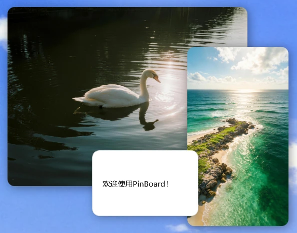

Windows - v0.1.0
把任何内容钉在桌面上。
PinBoard 可以把截图、图片和文本快速变成可置顶卡片，适合设计参考、写作对照、多窗口信息暂存。
安装包约 50.9 MB，self-contained 版本，无需单独安装 .NET Runtime。Release 上传前下载按钮可能暂时不可用。
如果浏览器提示"此文件不常下载"或拦截下载，请确认来源为 Cheney-0821/pinboard-site 后选择保留或继续下载。

当前版本
v0.1.0
系统
Windows x64
运行方式
托盘常驻
安装包
约 50.9 MB
截图创建卡片
框选屏幕区域后，在原位置生成可拖动、可缩放、可置顶的截图卡片。
剪贴板自动判断
复制图片、图片文件或文本后，用快捷键直接创建对应卡片。
图片处理
支持微信图片复制兼容、EXIF 方向校正、顺时针旋转和旋转后复制。
文本参考
文本卡片支持编辑、选择复制、复制全文、滚动、缩放和调整大小。
快捷键
支持自定义全局快捷键，也可绑定 F9、Home、Pause 等单键。
找回卡片
卡片过大或跑出屏幕时，可一键找回所有卡片。